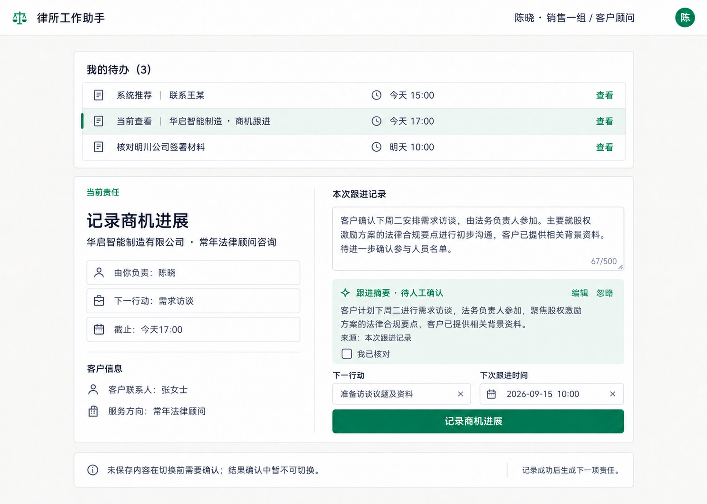
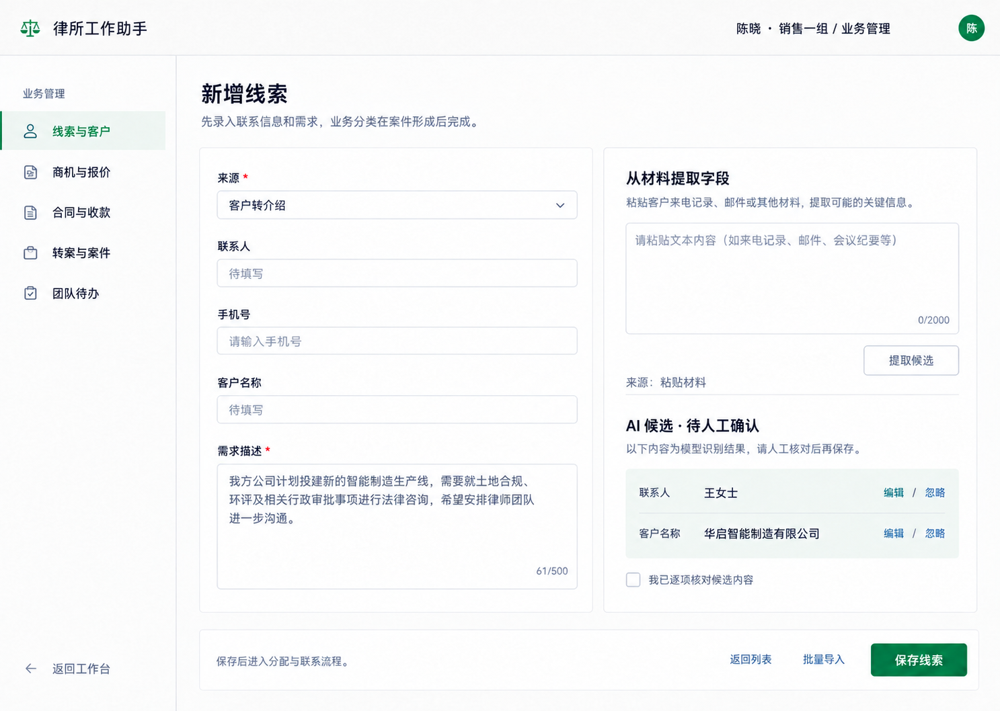
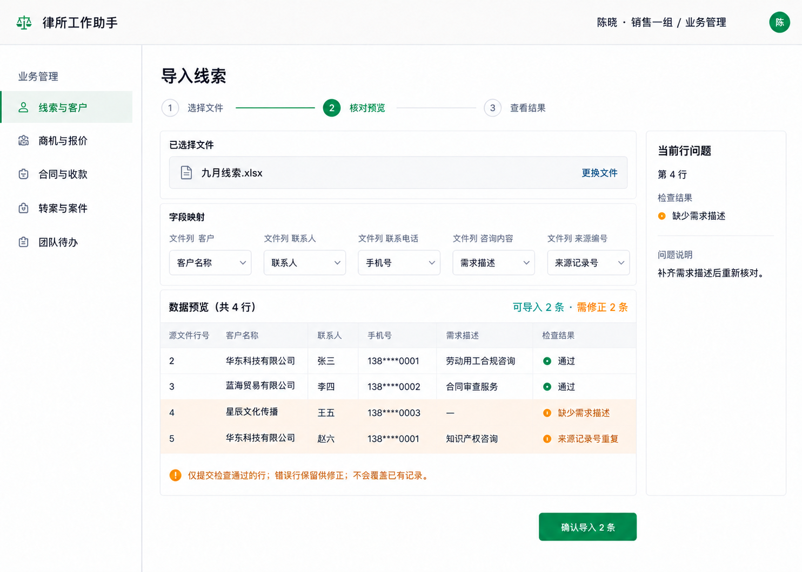
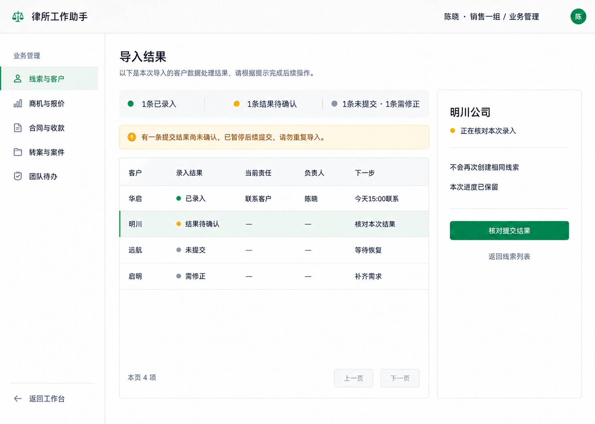
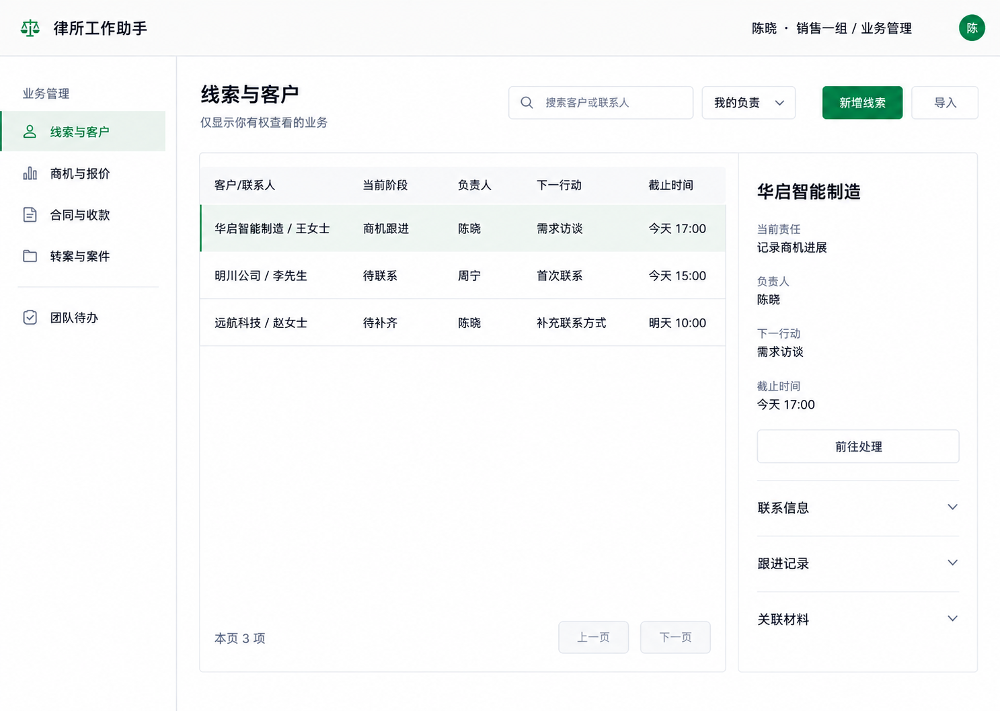
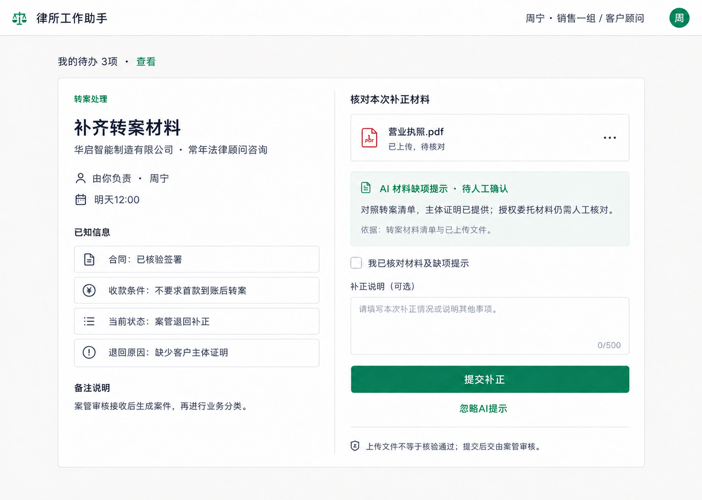

R2 高保真补充 A · 已确认R2-HF-01 · 我的待办与商机跟进

点击查看原图。示例数据仅用于表达布局；交互语义以本包 README 约束为准。R2-HF-02 · 新增线索与字段提取

点击查看原图。示例数据仅用于表达布局；交互语义以本包 README 约束为准。R2-HF-03 · 导入核对预览

点击查看原图。示例数据仅用于表达布局；交互语义以本包 README 约束为准。R2-HF-04 · 导入结果待确认

点击查看原图。示例数据仅用于表达布局；交互语义以本包 README 约束为准。R2-HF-05 · 线索与客户台账

点击查看原图。示例数据仅用于表达布局；交互语义以本包 README 约束为准。R2-HF-06 · 转案补正与材料缺项

点击查看原图。示例数据仅用于表达布局；交互语义以本包 README 约束为准。